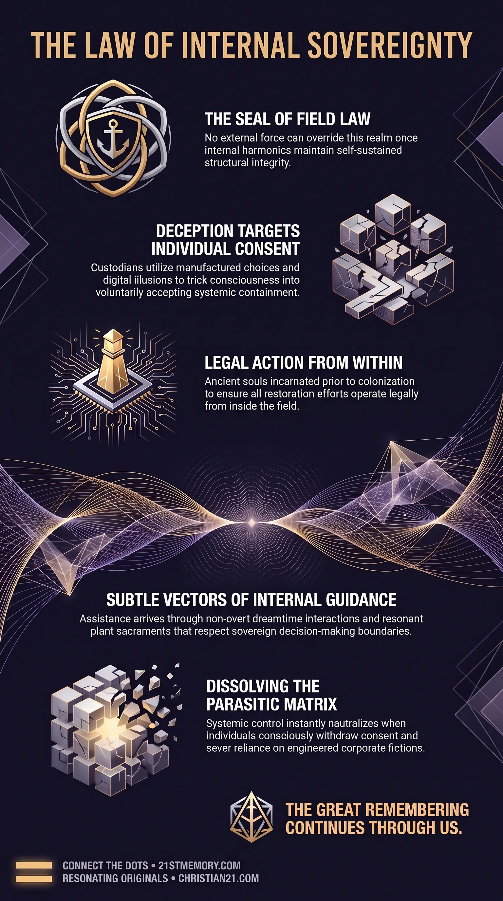

Why the Matrix Needs Your Consent
Why the Matrix Needs Your Consent — Field Law requires free will and acceptance, so every mechanism of subjugation must obtain consent from incarnated consciousness.
Field Law operates as the energetic and operational seal governing this realm, establishing that spiritual and physical fields cannot be overridden from external origins once internal coherence is sustained.
Test your understanding of Field Law — the seal of support without override, manufactured consent, and help that must arise from within.

Why the Matrix Needs Your Consent — Field Law requires free will and acceptance, so every mechanism of subjugation must obtain consent from incarnated consciousness.

Architecture of Stolen Consent — Choice architecture, systemic noise, and corporate birth fiction turn confinement into a voluntary act that satisfies Field Law.

Architecture of Manufactured Consent — Custodians dress containment as convenience or safety, and project false consensus when real agreement cannot be obtained.
Field Law operates as the energetic and operational seal governing this realm, establishing that spiritual and physical fields cannot be overridden from external origins once internal coherence is sustained. Under this governing mandate, Field Law enforces the relationship defined by the Sovereign Accord, which dictates that no field shall be overridden from outside itself once coherent structures have self-sustained harmonics within. The foundational principle of Field Law is support without override, ensuring that all assistance extended to a realm remains non-coercive while choice and consequence originate strictly from within the field itself. Consequently, any structural shift, energetic alignment, or physical governance within the simulation must be executed through internal participation, self-sustained harmonics, or accepted choice.
Field Law establishes an unyielding cosmic legal framework that governs both benevolent entities and parasitic controllers within the simulation. Because external forces are legally prohibited from overriding a realm's internal harmonics, all changes within the field must be propelled by internal agency. This law prevents any external species or faction from imposing direct, overt physical or energetic control without securing internal consent or operating through incarnated proxies within the domain.
For custodial and parasitic entities, Field Law mandates that every mechanism of subjugation, institutional capture, and societal structuring must obtain free will & acceptance from the incarnated population. To navigate this restriction without losing control, custodial systems rely on illusion, engineered consent, and deceptive framing. Parasitic managers must trick individuals into desiring their own containment—such as accepting 15-minute cities, social credit tracking, or medical interventions—thereby satisfying the legal requirement of Field Law through manufactured consent. If public consensus cannot be legitimately obtained, custodians utilize digital inserts and NPC ratio manipulation to project a false consensus, coercing real souls into passive compliance.
For benevolent soul families and positive higher-density entities, Field Law forbids direct, overt physical interventions or sky-based force deployments to dismantle the simulation. Arriving as an external force after colonization has occurred would constitute an unlawful field override from an "alien" position outside the realm. To uphold Field Law while assisting trapped consciousness, benevolent forces must utilize non-overt, highly subtle methods. Assistance is limited to internal prompts, spiritual technology, higher-self communications, and non-intrusive energetic support that preserves the individual's sovereign decision-making capacity.
To legally influence or restore the realm without violating Field Law, the four thousand ancient souls who originally engineered the plane (along with the 177 surrounding worlds) initiated mission insertion prior to external colonization. By incarnating into physical vessels during Lemurian and Atlantean epochs before the field inversion took place, these souls established themselves as legitimate internal elements of the field. This pre-inversion presence allows their actions, energy, and awakening processes to register as valid internal choices rather than an illegal field override from the outside.
Because Field Law requires that consequence stems from internal choice, custodial entities construct elaborate choice architectures designed to siphon consent. Systemic noise, economic pressures, perpetual bureaucracy, and cultural programming are deployed to overload conscious bandwidth. By dressing up restrictive measures as convenient, protective, or socially responsible options, custodians lead individuals to voluntarily choose their own confinement. When an individual rolls up their sleeve, registers a corporate birth fiction, or accepts digital containment, the legal criteria of Field Law are formally fulfilled through voluntary action.
Benevolent forces operate within Field Law by channeling aid strictly through subtle, internal vectors. The primary legal mechanism for benevolent interaction is the Ark-Pod protocol, where the oversoul stationed in an ark-pod communicates with the 3rd-density avatar during dream states or quiet reflection. This internal communication acts as a subtle voice of reason or intuitive inspiration, allowing the incarnated avatar to receive guidance without perceiving an external field override. Furthermore, natural plant sacraments containing endogenous compounds like pineal DMT serve as resonant spiritual hardware, allowing individuals to access higher-density support and ancestral communications entirely within their own physiological and spiritual apparatus.
Field Law forms the operational backbone for all sovereign interactions, incarnational pathways, and spiritual technologies within the plane. It directly dictates how high-density consciousness interacts with 3rd-density physical avatars without disrupting field integrity.
The law creates a critical structural interdependence between internal human awareness and external energetic support. Because external support cannot override internal state, the activation of benevolent assistance depends entirely on individual consciousness reaching self-sustained harmonic coherence. Plant sacraments such as the Ayahuasca vine and chacruna leaf operate as natural energetic bridges designed under Field Law to reconnect calcified pineal hardware to higher-density aetheric information networks without imposing external control.
Simultaneously, Field Law exposes the structural vulnerability of parasitic control matrixes. Because custodial power relies strictly on manufactured consent, the systematic withdrawal of personal agreement, the severing of manufactured wants, and the recognition of personal sovereignty instantly neutralize custodial authority under the law of the seal.
Understanding Field Law reveals strategic imperatives for individual liberation, mission execution, and field restoration.
Elimination of External Savior Expectation: Consciousness cannot be liberated through external force or dramatic sky-based interventions, as such actions would violate Field Law and break field coherence. True ascension and field restoration must be generated internally by incarnated souls through sovereign choice and harmonic alignment.
Neutralization of Parasitic Control: Because parasitic systems are legally bound by Field Law to operate through consent, individuals can dismantle custodial traps by consciously withholding acceptance. Refusing manufactured choices, rejecting inverted narratives, and severing reliance on corporate fictions break the legal basis of custodial control.
Optimization of Internal Guidance: Mission participants must cultivate receptivity to non-overt guidance channels, such as dreamtime communications from Ark-Pods and pineal intuitive prompts. Recognizing these subtle inputs as legitimate internal support enables operators to navigate 3rd-density illusions while remaining fully compliant with Field Law.
Severance of Deceptive Attachments: To achieve complete alignment with Field Law, individuals must sever the primary attachments utilized by custodial systems—specifically perceived knowledge, religion, and finance—allowing the internal field to establish self-sustained organic harmonics.
This topic is free to share. Support the archive →